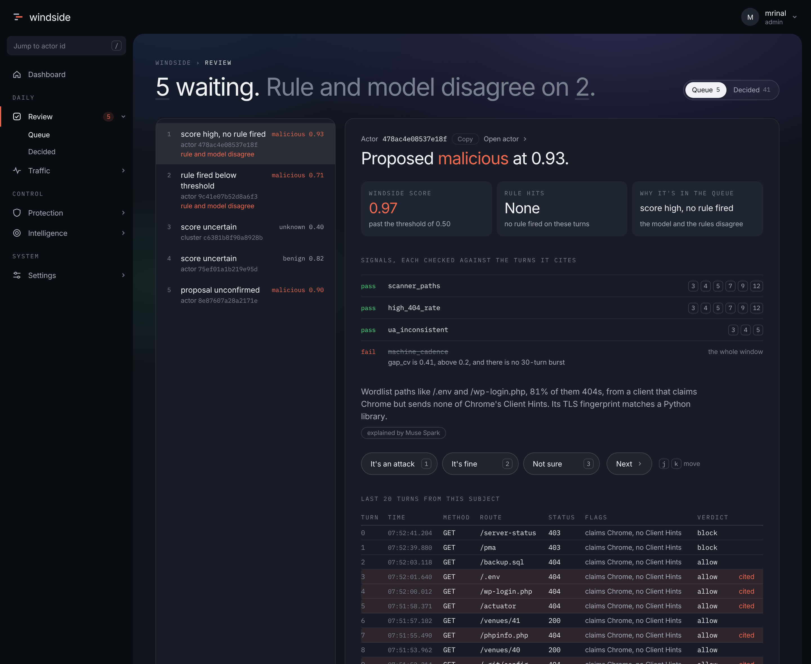

Three loops, one judgement at a time.
Fast decisions happen on every request. Slow, expensive thinking happens on the side, and nothing new is learned until a person agrees.
Every request
milliseconds, on the request pathRules you can read, plus a Windside score from a small classifier trained on your own traffic. Shadow mode scores without acting so you can watch it first; enforce mode rate-limits or blocks.
Every hour
the assistant, off the request pathWhen something new shows up, Muse Spark reads the actor's recent turns and proposes a label, an explanation and sometimes a rule. Each signal it cites is checked against the turns, and a claim with no evidence is dropped before anyone sees it.
Every week
you, in the review queueConfirm or reject with one key. Confirmed labels retrain the model, accepted drafts become rules, and rejected proposals teach the next prompt. Nothing learns without a person saying so.
Every call, shown with its evidence.
A proposal in the review queue puts the model's score beside the rules, lists each signal with the turns it cites, strikes through the one that failed its check, and gives you three keys to decide.

Sample data from the design build. The actor page behind the Open actor link shows identity bindings, client fingerprints, activity, the score's top features, labels, decisions and a Raw tab with every stored column.
Four parts, one box.
- leeside-laravelComposer package
- Captures method, route, status, timing, client shape and fingerprints for every request. IPs, user agents and tokens are hashed with your key before anything leaves the app, so the store never holds them. Adds under a millisecond per request.
- leesidedRust daemon
- Holds the rules, the scoring, the review queue and the console in one process over SQLite, bound to localhost. Your nginx serves
/windsidefrom the same server block as the app; a read-only viewer token lets you share the console without sharing the keys. - Windsidethe classifier
- A LightGBM model over 38 per-actor features: cadence, status mix, route spread, request shape, network neighbours. A passive tap adds each connection's TLS fingerprint, so a client that claims to be Chrome is checked against what its handshake says. Model 0.1.0 runs in shadow today.
- The assistantMuse Spark
- Labels, explanations, classifications and rule drafts, each with per-signal citations and a daily budget. Off by default; one key turns it on, and every prompt change is measured against the last one before it ships.
Measured, not promised.
| Eval | Rows | Agreement |
|---|---|---|
| 1 | 10 | 0.20 |
| 3 | 142 | 0.80 |
| 5 | 156 | 0.92 |
| 7 | 148 | 0.971 ± 0.009 |
Agreement between the assistant's labels and a reviewed golden set, scored the way production scores: after the evidence checks, not before. Eval 7 is three runs over 148 rows; the spread is the run-to-run variation of the model at the margin.
Each prompt is content-addressed, so any two versions can be compared row by row before one replaces the other. The golden set comes from traffic to our own sample app; wider sets are the next step, and the numbers will move.
Install on a box that already runs your app.
One line as root on Ubuntu 22.04 or 24.04. It installs the daemon and the tap, writes a root-only environment file, wires /windside into your app's nginx server block, and prints the Laravel steps once.
curl -sSL https://raw.githubusercontent.com/MassvHalo/Leeside/master/install.sh | sudo bash
Then, in the app:
composer require leeside/laravel # add the printed LEESIDE_* keys to .env; the provider registers its middleware
You get two tokens: an admin token that stays on the box, and a viewer token for anyone who should see the console but change nothing. A Baseten key turns the assistant on; without one, rules and the Windside score still run.